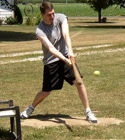
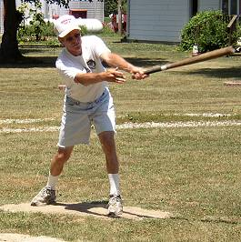
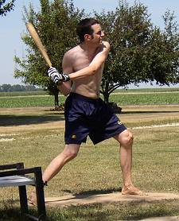
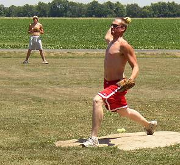
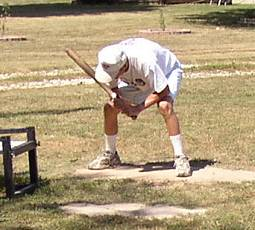
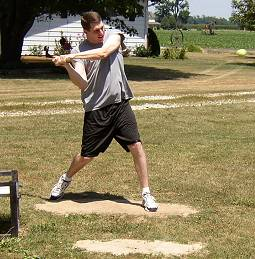

Chris Cork drives a near triple to center in the 2nd inning. Nate Owens robbed Chris of a hit with a running catch on the play. |

Tony Cork slaps a ball to right for one of his 5 hits on the afternoon. |

Patrick Cork finished the day 5-for-18, and tallied a season-high 6 outfield assists in the game. |

Carter Thorlton pitched 14 scoreless innings to pick up the win. Thorlton's 2-run homer in the 14th resulted in the only runs of the game. |

Tony Cork ducks out of the way of this pitch. Cork was outstanding on the mound pitching 8 2/3 scoreless innings and allowing just 3 hits, but picked up a no decision. |

Chris Cork struggled in his first action since last July finishing the day 0-for-18 with 9 K's. |